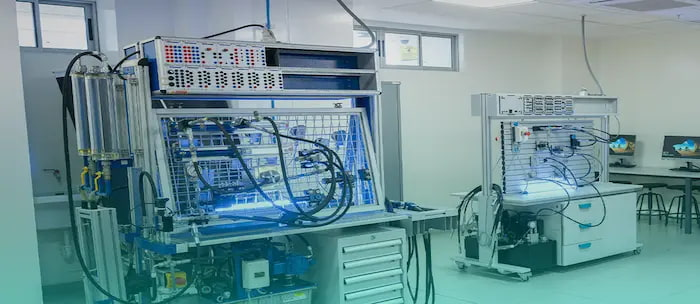

Educación Tecnológica de Nivel Superior
Modelo Aprendizaje Dual
Aprende haciendo de forma directa en las empresas tecnológicas e industriales más importantes del país desde los primeros semestres.

Laboratorios Modernos
Infraestructura equipada con servidores de alto rendimiento dedicados al procesamiento de datos, redes neuronales y Cloud Computing.
Certificaciones Globales
Egresa con certificaciones internacionales validadas por los gigantes de la industria del software y la seguridad informática.
Sustento Académico Sustentación del Proyecto — Currícula
Este proyecto web multiplataforma implementa de forma íntegra las unidades de aprendizaje dispuestas por la Dirección de Tecnologías de la Información de SENATI para el curso de Desarrollo de Aplicaciones Web I:
Uso estricto de la declaración inicial <!DOCTYPE html>, codificación universal meta charset="utf-8" y estructuración semántica modular nativa mediante el empleo del contenedor raíz <html>, cabecera de metadatos <head>, barra de navegación <nav> y el bloque de contenido exclusivo <main>.
Definición e inserción de estilos internos mediante la etiqueta <style>. Maquetación mediante el uso técnico de variables globales (:root), selectores de clase (.feature-box), configuraciones avanzadas de fuentes tipográficas externas (Google Fonts), control estricto de colores de fondo, márgenes (margin), rellenos (padding) y contraste de texto optimizado para accesibilidad web.
Implementación e interconexión remota de la biblioteca Bootstrap 5.3 para el despliegue del sistema de rejillas adaptable (container, row, col-md-4), componentes de navegación fluida, contenedores elásticos (Flexbox) y etiquetas dinámicas de estado para la compatibilidad móvil completa.